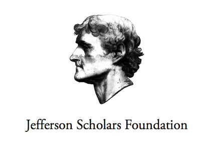
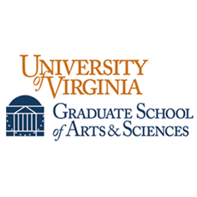
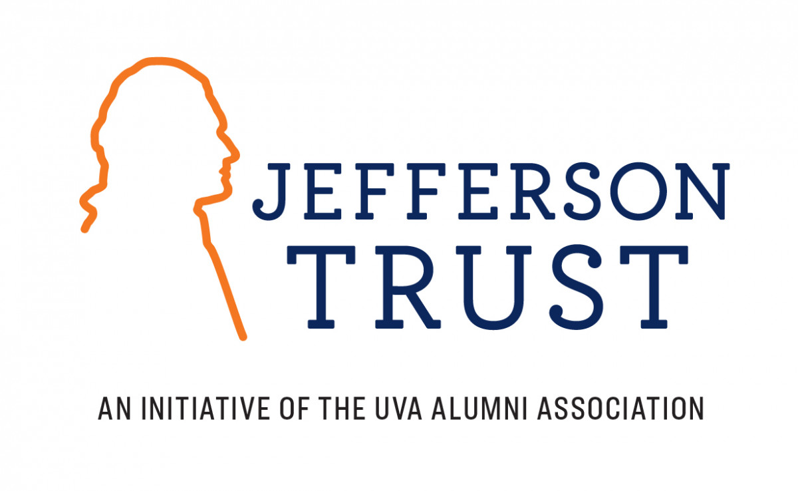

Although applying for grants and fellowships to support our work and our lives is important, we rarely receive guidance about how to do so. Students from historically underrepresented backgrounds are often at a particular disadvantage. One way to break this cycle is to share samples amongst ourselves, not to encourage a copy-and-paste model of applying but rather to demystify the linguistic conventions and social codes that shape the genre of grant application writing. I am grateful to those who shared their work with me in the past, and this is my way of paying that generosity forward. Below are three application samples that led to the desired outcome. All of them are focused on grants and fellowships at UVa, but they could also be useful for applying to similar opportunities at other universities or funding bodies. These do not represent the best, nor the only, way of applying for funding, and should be understood only as starting points for your own work.
Please click on each heading below to find out more.
This new iteration of the Jefferson Fellowship combines the previous emphasis on research with teaching through a two-year predoctoral and postdoctoral fellowship, geared toward advanced PhD candidates who have almost finished writing their dissertations. Every eligible PhD candidate should apply. The application materials contain 8 components, and you can learn more about them on the Foundation's website. The components that require the applicant to write something are: (1) an academic plan and timeline, (2) a dissertation abstract, (3) two course proposals -- one in the applicant's home department, and the other in the Engagements Curriculum, and (4) an optional sample dissertation chapter.
A copy of my course proposals is below. It is one of the most important parts of the application. If you advance to the second round of the application process, you will give a presentation and interview which will focus primarily on your course proposals and teaching approach. Course proposals are also a genre that graduate students are not necessarily taught how to write, but they are often required for academic jobs. (The rest of the documents are highly applicant-specific so I have not provided them as they are not as helpful.) The application portal opens every December, and closes a month later in January. Please note that some of the course themes have changed since I submitted the application last year.
This award intends to support research costs for early to mid PhD candidates who are beginning of their dissertation work, such as visiting archives, attending conferences, or professional development courses. The deadline for this is typically in the Spring. You can apply for up to $5000 USD of funding. I applied for $2328 to fund a small research trip. However, the pandemic hit shortly after I received the funds, and by the time global travel was open again, my plans had changed entirely based on new trajectories that my work had taken. But the application documents are still helpful as an example of how to apply for small to mid-sized grants like this. The application involves 4 components and you can learn more about them on the website. The components include a project statement and detailed budget sheet. I have provided my project statement below, but almost all of what I wrote is no longer relevant; I also did not end up applying for the Renate Voris, CFUW, and NEH Digital Humanities Fellowships because I received another fellowship shortly after submitting the AHSS application. However, all of those fellowships are great opportunties that you should apply for if you are eligible.
Service activities like planning conferences or reading/working groups are often voluntary, but there may be instances where you will have to -- or want to -- raise funds for an event or to compensate for the labor and time that you and others have contributed to the project. The Jefferson Trust is one option that I have found useful for funding these kind of projects. You should consider applying if your event or project meets the requirements of the Trust, which are outlined on the website. Below are two applications: the first I submitted to fund part of my department's graduate conference in 2019 (we eventually changed our plans because of the pandemic) and the second I submitted in 2021 to fund a working group about anti-racist teaching. While I was the co-leader in both proposals, the application was collaboratively produced by all of the graduate students and faculty listed in each project.
Another resource is the "Grant Application Template" in Karen Kelsey's The Professor Is In. I do not agree with eveything in this book and I do not think one must necessarily follow her template to the letter, but this document is helpful because it outlines some basic building blocks of an application which you can then use to brainstorm your own statements.